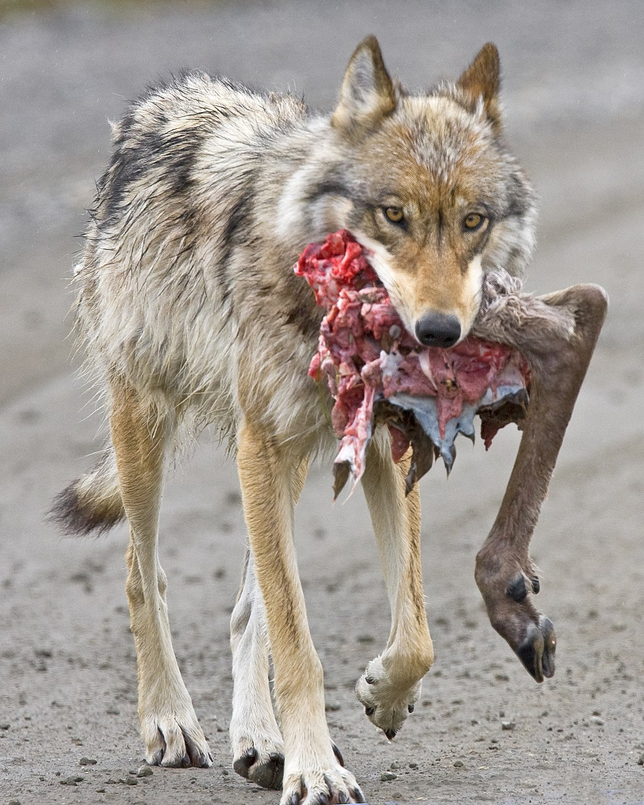
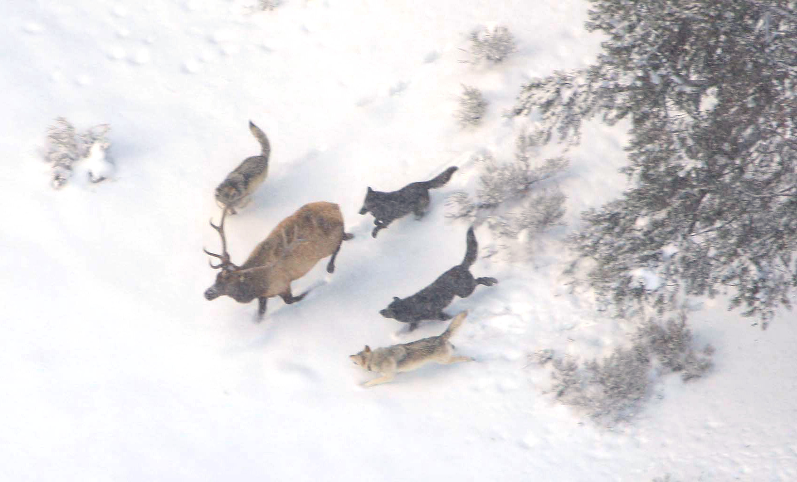

The gray wolf is a type of apex predator. Their primary food source is large ungulates such as deer, moose, and bison, which can provide them with high energy. They also eat other small animals such as rabbits, rats, and birds.

By Denali NPS - Wolf with Caribou HindquarterUploaded by Mariomassone, Public Domain, https://commons.wikimedia.org/w/index.php?curid=19584974
Cooperative Hunting

By Doug Smith - english wikipedia http://en.wikipedia.org/wiki/File:Wolves_and_elk.jpg or http://www.nps.gov/yell/photosmultimedia/photogallery.htm?eid=379961&aid=547&root_aid=547&sort=title&startRow=10#e_379961, Public Domain, https://commons.wikimedia.org/w/index.php?curid=141761918
Gray wolves are the most specialized species for cooperative game hunting among all Canis members, which enables them to hunt large herbivores. They can work together excellently, have sufficient patience, and are also able to take advantage of the terrain when hunting.
When they locate these large herbivores, all members of the pack, except for the females caring for cubs, join in on the hunt. Initially, guided by the dominant wolf, they will tentatively disturb and charge at the prey group. As a result, the prey group becomes afraid and flees, which enables wolves to distinguish and separate the weak individuals from the rest of the group. Once the target is selected, they will chase the prey until it is exhausted. Then, the wolf pack will surround it tightly, with one or two wolves making feigned attacks in front, which create opportunities for other wolves to bite the prey’s limbs and tail from behind or on both sides. Meanwhile, some wolves will quickly bite their prey's mouth and nose, forcing the prey to fall due to the pain. Finally, the dominant wolf will deliver the fatal blow.
Role in Ecosystem
As apex predators and key species, wolves play a crucial role in maintaining ecological balance. To be more specific, their selective hunting behavior prevents overgrazing and maintains healthy herbivore populations, thus enhancing habitat conditions.